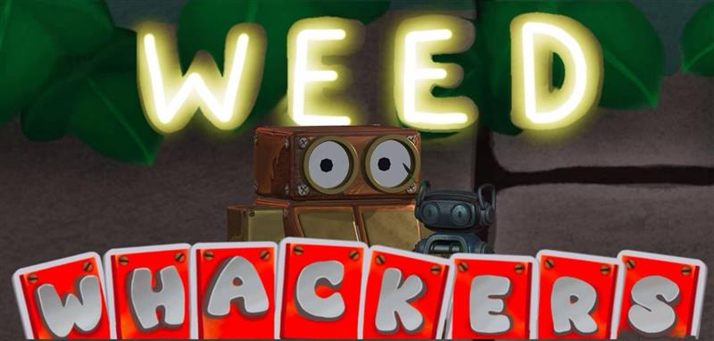

The WeedWhackers

The WeedWhackers is a couch co-op turn based tactical card game where players play as a duo of robots defeating invasive plant monsters with whatever they can find. I am the only programmer on this project. The game itself was inspired in part by how me and my flatmate/ group member play Pokémon and other turn-based games by passing around a controller. We couldn’t find another couch co-op turn based RPG like how we played so we decided to make it ourselves (alongside the other team members).
The main challenge with this project is the fact that I am the only programmer working on it. This has led me to develop tools for the designer to use to make new cards and enemies. This was my first time creating tools in Unity and was a learning curve however the tools paid dividends and was effective in making it easy for the designer to implement what he had done. Later into the project, I also made tools for one of the 3d artists/animators to be able to implement rumble and audio into the animations, which fixed some criticisms of game feel for the project.
One of the biggest hurdles I overcame over the course of the project was understanding and making use of the new unity input system. I stared work on the project using the old system; however, the multiplayer nature of the game made it essential to use. This led to a refactor period and me learning the new system on the fly. I ended up using a modified/hybrid version of the control system used in both Re-Jigged and Warpjam, with a parent class dealing with the inputs and child versions of the class having the necessary accessories.
There were a lot of internal issues in the making of the game, but I’m proud of what I personally was able to accomplish on the game. If you wish to play it for yourself, you can do so by pressing the link below: